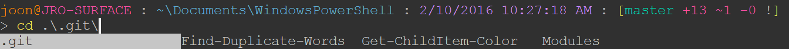

My PowerShell Customizations
I describe my customizations for PowerShell. With these, my PowerShell terminal looks like the following screenshot. Not only these customizations make it look great, but also they make me productive in the command line in Windows.

ConEmu
I use ConEmu as my terminal emulator. ConEmu provides tabbed sessions, changing color schemes on-the-fly, and many customization options.
Color Themes
The screenshots are taken with moe-dark theme. ConEmu comes with many color
schemes, and I also maintain a github repository which contains my favorite
color themes for ConEmu. You can check out the GitHub repository.
posh-git and prompt customization
To get git-related information on your prompt, you should get posh-git. Then,
you can show the git-related information along with other useful information
by modifying prompt() function. I have two separate example customization
code snippets for posh-git v1.x (currently in beta) and v0.x, the two versions
that are available as of March 2020. Both should produce the same prompt.
v1.x (e.g., v1.0.0)
# http://serverfault.com/questions/95431 function Test-Administrator { $user = [Security.Principal.WindowsIdentity]::GetCurrent(); (New-Object Security.Principal.WindowsPrincipal $user).IsInRole([Security.Principal.WindowsBuiltinRole]::Administrator) } Import-Module -Name posh-git $GitPromptSettings.PathStatusSeparator = '' $GitPromptSettings.AfterStatus.Text += " " function prompt { $origLastExitCode = $LastExitCode $prompt = "" $prompt += Write-VcsStatus if (Test-Administrator) { # if elevated $prompt += Write-Prompt "(Elevated) " -ForegroundColor White } $prompt += Write-Prompt "$env:USERNAME@" -ForegroundColor Red $prompt += Write-Prompt "$env:COMPUTERNAME" -ForegroundColor Yello $prompt += Write-Prompt " : " -ForegroundColor DarkGray $prompt += Write-Prompt "$($GitPromptSettings.DefaultPromptPath.Expand().Text)" -ForegroundColor Green $prompt += Write-Prompt " : " -ForegroundColor DarkGray $prompt += Write-Prompt (Get-Date -Format G) -ForegroundColor Blue $prompt += Write-Prompt " : " -ForegroundColor DarkGray $prompt += Write-Prompt "`n$(if ($PsDebugContext) {' [DBG]: '} else {''})" -ForegroundColor Magenta $prompt += "$('>' * ($nestedPromptLevel + 1)) " $LastExitCode = $origLastExitCode $prompt }
v0.x (e.g., v0.7.3)
# http://serverfault.com/questions/95431 function Test-Administrator { $user = [Security.Principal.WindowsIdentity]::GetCurrent(); (New-Object Security.Principal.WindowsPrincipal $user).IsInRole([Security.Principal.WindowsBuiltinRole]::Administrator) } function prompt { # https://github.com/dahlbyk/posh-git/wiki/Customizing-Your-PowerShell-Prompt $origLastExitCode = $LastExitCode Write-VcsStatus if (Test-Administrator) { # if elevated Write-Host "(Elevated) " -NoNewline -ForegroundColor White } Write-Host "$env:USERNAME@" -NoNewline -ForegroundColor Red Write-Host "$env:COMPUTERNAME" -NoNewline -ForegroundColor Yellow Write-Host " : " -NoNewline -ForegroundColor DarkGray $curPath = $ExecutionContext.SessionState.Path.CurrentLocation.Path if ($curPath.ToLower().StartsWith($Home.ToLower())) { $curPath = "~" + $curPath.SubString($Home.Length) } Write-Host $curPath -NoNewline -ForegroundColor Green Write-Host " : " -NoNewline -ForegroundColor DarkGray Write-Host (Get-Date -Format G) -NoNewline -ForegroundColor Blue Write-Host " : " -NoNewline -ForegroundColor DarkGray $LastExitCode = $origLastExitCode "`n$('>' * ($nestedPromptLevel + 1)) " } Import-Module -Name posh-git -RequiredVersion 0.7.3 $global:GitPromptSettings.BeforeText = '[' $global:GitPromptSettings.AfterText = '] '
Color coding Get-ChildItem
To color-code the results of Get-ChildItem, I use my own
Get-ChildItemColor. Once you install it, you can set aliases to the exposed functions:
If (-Not (Test-Path Variable:PSise)) { # Only run this in the console and not in the ISE Import-Module Get-ChildItemColor Set-Alias l Get-ChildItemColor -option AllScope Set-Alias ls Get-ChildItemColorFormatWide -option AllScope }
so you have colored versions of l and ls equivalents.
PSReadLine
PSReadLine makes PowerShell to behave like zsh, which is my favorite shell
in GNU/Linux. It gives you substring history search, incremental history
search, and awesome tab-completion. The following is my current setup:
Import-Module PSReadLine Set-PSReadLineOption -HistoryNoDuplicates Set-PSReadLineOption -HistorySearchCursorMovesToEnd Set-PSReadLineOption -HistorySaveStyle SaveIncrementally Set-PSReadLineOption -MaximumHistoryCount 4000 # history substring search Set-PSReadlineKeyHandler -Key UpArrow -Function HistorySearchBackward Set-PSReadlineKeyHandler -Key DownArrow -Function HistorySearchForward # Tab completion Set-PSReadlineKeyHandler -Chord 'Shift+Tab' -Function Complete Set-PSReadlineKeyHandler -Key Tab -Function MenuComplete
With these settings, I can press up and down arrows for history substring search, and the tab completion shows me available candidates. For example:
You can also use CTRL + r for incremental history search.
Others
cddash
You can use the following to have the "dash" functionality - namely, you can go
back to the previous location by typing cd -. It is from
http://goo.gl/xRbYbk.
function cddash { if ($args[0] -eq '-') { $pwd = $OLDPWD; } else { $pwd = $args[0]; } $tmp = pwd; if ($pwd) { Set-Location $pwd; } Set-Variable -Name OLDPWD -Value $tmp -Scope global; } Set-Alias -Name cd -value cddash -Option AllScope
Boost startup speed
If you feel it takes a lot of time to start a PowerShell session due to your
profile script, I found running the following (I saved it as ngen.ps1) in an
elevated PowerShell helps a lot.
$env:path = [Runtime.InteropServices.RuntimeEnvironment]::GetRuntimeDirectory() [AppDomain]::CurrentDomain.GetAssemblies() | % { if (! $_.location) {continue} $Name = Split-Path $_.location -leaf Write-Host -ForegroundColor Yellow "NGENing : $Name" ngen install $_.location | % {"`t$_"} }
Changelog
- [2020-03-01 Sun]
Add prompt customization for both
posh-gitversions v1.x and v0.x.
- [2017-04-22 Sat]
Update prompt customization script for the latest version of
posh-git(0.7.2)Update
Git-ChildItemColorrelated information
- [2017-01-03 Tue]
Update prompt customization script for the latest version of
posh-git
Comments
Comments powered by Disqus